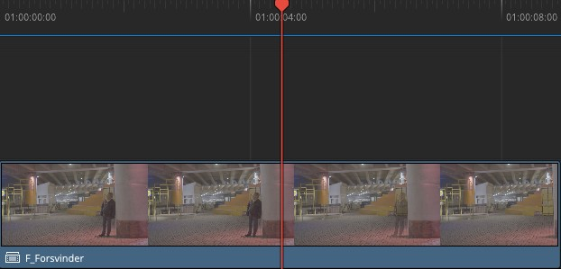
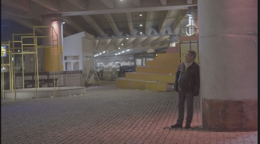
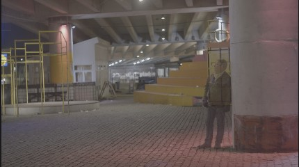
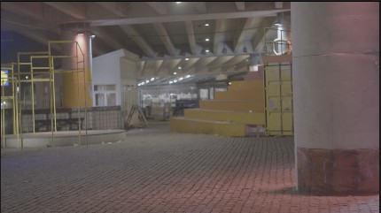
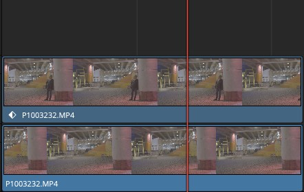
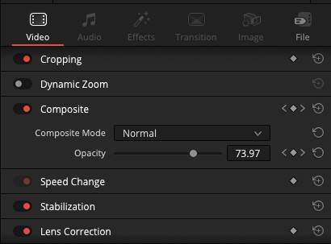
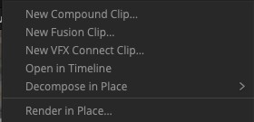

Første del
Se effekten
Find klippet F_Forsvinder i binnen, og spil det igennem. Læg mærke til, hvad der sker med personen.




Anden del
Prøv at genskabe den
I binnen ligger rammaterialet, kameraet stod stille under optagelsen. Prøv at bygge effekten selv, med det I allerede ved fra Edit L1 og L2. I skal ikke lykkes fuldt ud, det vigtige er at prøve.
Vi aner ikke hvor vi skal starte
Kameraet står stille hele optagelsen igennem, så baggrunden er den samme fra start til slut. Se på hele klippet i source viewer: er der et tidspunkt, hvor personen slet ikke er i billedet?
Tredje del
Sådan er den lavet Klik når I har prøvet selv, eller er gået i stå
Samme kildefil, brugt to gange. Ingen tricks ud over det, I allerede kender fra Edit L1 og L2.
-
Læg klippet ned to gange
Træk kildeklippet ned på to spor, det ene oven på det andet. På det øverste spor: trim til det stykke, hvor personen står ved pillen. På det nederste spor: trim til et senere tidspunkt i samme optagelse, hvor personen allerede er gået. Fordi kameraet ikke har flyttet sig, er baggrunden identisk begge steder.

Begge spor viser den samme fil. Diamanten på det øverste betyder, at der allerede er sat keyframes. -
Keyframe Opacity på det øverste lag
Vælg klippet på det øverste spor, åbn Inspector → Composite. Sæt playheadet til starten, og klik diamant-ikonet ud for Opacity for at sætte et keyframe ved 100 %. Flyt playheadet et par sekunder frem, og sæt Opacity til 0 %. Resolve keyframer overgangen automatisk.

Opacity midt i overgangen, her 73,97. Pilene ved siden af feltet hopper mellem keyframes. -
Saml det i et Compound Clip
Marker begge klip, højreklik, og vælg New Compound Clip. Giv det et navn. De to spor bliver nu til ét klip på hovedtimelinen, akkurat som F_Forsvinder, I så i starten. Dobbeltklik på det for at gå ind og redigere de to lag igen.

Samme menu har også New Fusion Clip, som I stifter bekendtskab med om lidt.
Personen forsvinder ikke, den bliver bare gennemsigtig
Tjek at det nederste spor rent faktisk er trimmet til et tidspunkt uden personen. Er begge spor trimmet til samme øjeblik, ser I personen på begge lag, og de blander sig i stedet for at afsløre en tom baggrund.